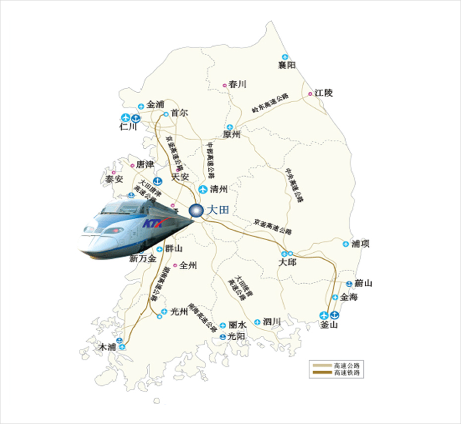

交通物流先进产业的中心
- Home
- 投资优势
- 交通物流先进产业的中心



方便的交通
- 可在90分钟内就可以到达韩国境内主要城市
- 高速公路：7条路线(京釜、湖南、唐津、西海岸、统营、泗川-公州、清原-尚州)
- KTX：京釜线、湖南线 / 首尔50分钟、釜山90分钟
- 国际机场：仁川国际机场(90分钟)、清州机场(30分钟)
- 靠近政府世宗官厅(世宗市)
高科技流通基础设施
- 运营大田海关指定货棚
- 大田综合流通园区、农水产品批发市场、大田公用货运站、大田产业材料流通园区